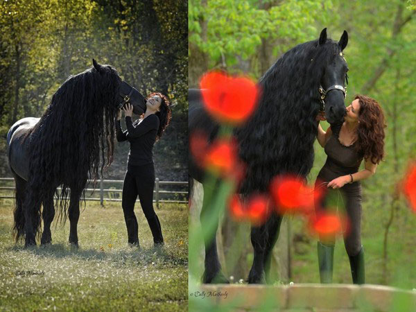
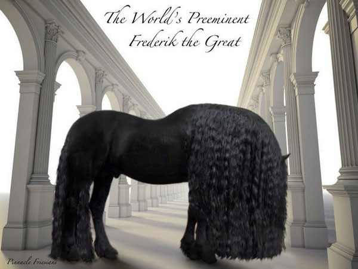
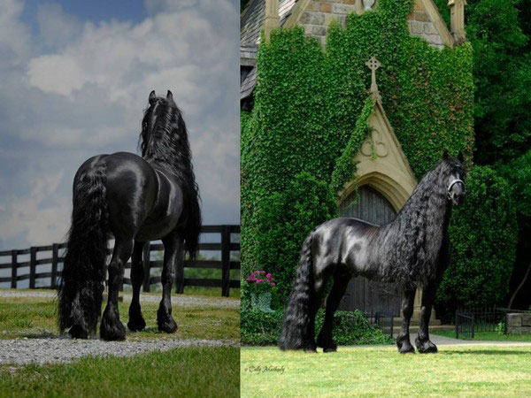
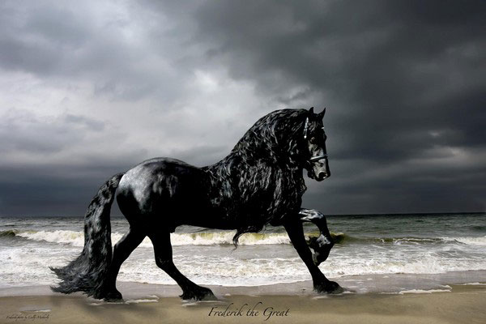

“腓特烈大帝”获封最帅的马 飘逸自来卷颜值爆表
闻名于世的马有很多例如楚霸王的乌骓、关羽的赤兔都是和历史风云人物有着密切关系而且成为主人得力干将的宝马，当然它们自身也都拥有非凡的风采，而下文这匹马的闻名却更多的是因为它超高的颜值。
（以下图片均翻摄自Frederik the Great FB脸书）

美国有一匹黑马，有着强壮体格，一头乌黑亮丽的长发，在奔跑时随风飘逸，超帅气的英姿被封为：世界上最帅的马！更有网友看了直说是：马界刘德华！
这匹黑马以“腓特烈大帝”为名，是属于荷兰的弗里斯马，这个流着欧洲血统的马种，从皮肤、鬃毛到尾巴，都散发着黑到发亮的光泽。由于一匹用墨玉雕琢而出的神驹。除了一身黑，这种马的体格强壮、反应敏捷、同时又带有聪明及温和的个性。“腓特烈大帝”跑起来，全身的肌肉、一头乌黑亮丽长发，随风吹拂的潇洒又飘逸，帅气破表！不禁让人想起了唐代诗人李贺的诗句：此马非凡马，房星本是精。向前敲瘦骨，犹自带铜声。
主人Stacy表示，看到牠的第一眼就深深爱上，加上了解到这种马在历史上，曾经濒临绝种3次，便积极地花上一年半的时间，于2006年引进至美国，立刻就赢得马术赛冠军。现在还有一位摄影师Cally Matherly，随身纪录牠的英姿！
“腓特烈大帝”有着超高颜值，引起CBS、CNN及多个脱口秀，都以“世界上最帅的马”争相报导。主人也为牠推出年历、卡片，2017年还预计发行专题影片。网友看到后，纷纷赞叹：好美的卷毛；是传说中的“黑神驹”，“不小心又初恋了”，都难敌牠的超帅魅力！
转载请注明来自有趣新闻网：腓特烈大帝”获封最帅的马 飘逸自来卷颜值爆表
喜欢本文马上分享给小伙伴吧！本文链接：https://www.yjhome.net/8027.html